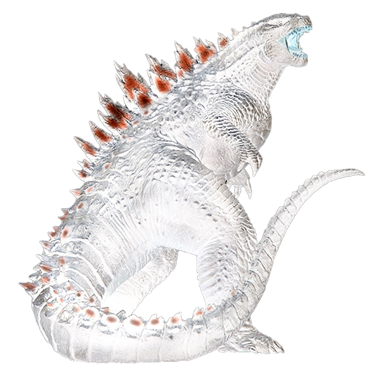
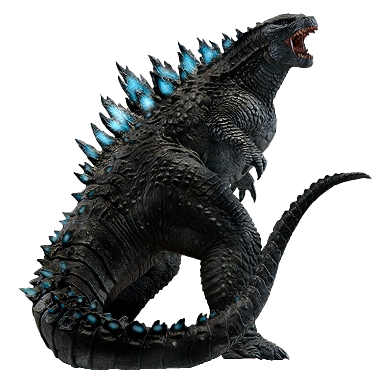
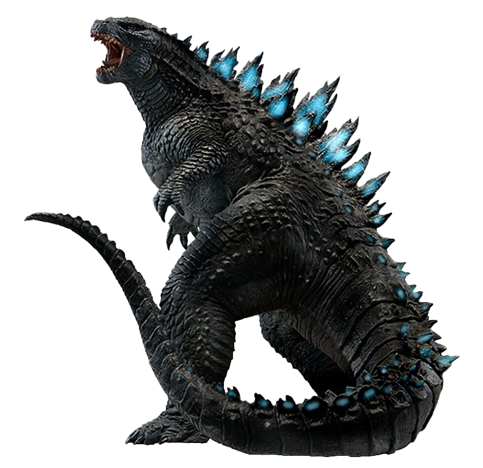

Directs the Viewer's Eye
The human brain is naturally wired to notice differences. High-contrast areas immediately become focal points.




Contrast is the juxtaposition of opposing visual elements. When artists place radically different qualities next to one another, each side gains emphasis, creating vibrancy, depth, and visual intrigue.
“Without contrast, an image loses depth and vibrancy. Contrast creates the tension that commands human attention.”
The human brain is naturally wired to notice differences. High-contrast areas immediately become focal points.
Extreme tonal contrast (like stark black and white) evokes mystery, terror, or heroism, while soft contrast feels peaceful and harmonious.
By placing bright highlights against deep shadows, artists give three-dimensional volume to two-dimensional surfaces.
Artists and cinematographers utilize multiple dimensions of contrast to tell compelling stories.
Value contrast is precisely what the Godzilla hero demonstrates. On the left, an inverted white silhouette cuts against a void of pure black. On the right, deep textured scales stand boldly against white. Extreme value contrast creates high-impact silhouettes and dramatic visual weight.
Godzilla is effective as an artistic icon because of scale contrast. By standing hundreds of feet above ordinary buildings, power lines, and fleeing crowds, the visual disparity emphasizes immense power, vulnerability, and impossible scale.
Godzilla's rugged, scarred hide and razor-sharp dorsal fins stand out vividly against smooth backgrounds or flat architectural surfaces. Texture contrast ensures that fine details do not get lost in visual noise.
Even in monochromatic art, subtle shifts between cool and warm tones make elements jump forward or recede. In modern Godzilla cinema, his cold bioluminescent atomic blue spine clashes against warm burning city fires, creating instantaneous contrast.
Click the principles below to examine how different contrast mechanics operate.
Value contrast is precisely what the Godzilla hero demonstrates. On the left, an inverted white silhouette cuts against a void of pure black. On the right, deep textured scales stand boldly against white. Extreme value contrast creates high-impact silhouettes and dramatic visual weight.
Godzilla is effective as an artistic icon because of scale contrast. By standing hundreds of feet above ordinary buildings, power lines, and fleeing crowds, the visual disparity emphasizes immense power, vulnerability, and impossible scale.
Godzilla's rugged, scarred hide and razor-sharp dorsal fins stand out vividly against smooth backgrounds or flat architectural surfaces. Texture contrast ensures that fine details do not get lost in visual noise.
Even in monochromatic art, subtle shifts between cool and warm tones make elements jump forward or recede. In modern Godzilla cinema, his cold bioluminescent atomic blue spine clashes against warm burning city fires, creating instantaneous contrast.
If every single part of an artwork is high-contrast, the viewer's eyes get exhausted. Reserve the greatest contrast for your main focal point.
Empty space (the black or white background) is just as active as the subject. It defines the silhouette and allows the eye to rest.
Notice how the black background makes Godzilla feel like a nocturnal creature emerging from the dark, while the white background feels like a graphic architectural print.